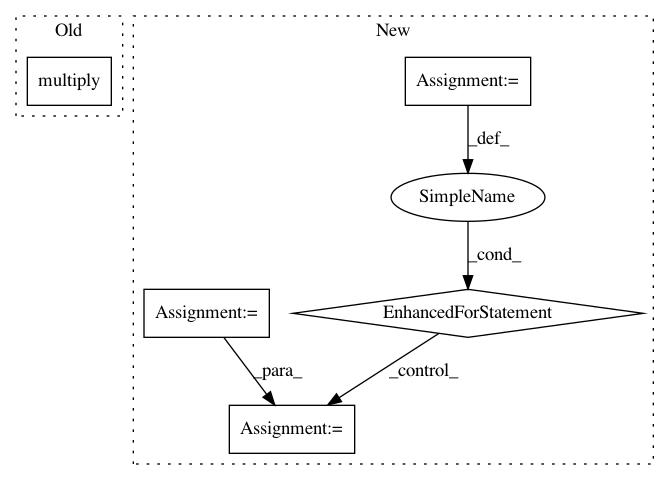

fe50c52a31b3231a1777f14eb6131a819f082fc8,Models/UnetSpectrogramSeparator.py,UnetSpectrogramSeparator,get_output,#UnetSpectrogramSeparator#Any#Any#Any#Any#,39
Before Change
return mags
else:
// Reconstruct audio
acc_stft = tf.multiply(tf.complex(mags[0], 0.0), tf.exp(tf.complex(0.0, mix_angle)))
voice_stft = tf.multiply(tf.complex(mags[1], 0.0), tf.exp(tf.complex(0.0, mix_angle)))
acc_audio = tf.contrib.signal.inverse_stft(acc_stft, self.frame_len, self.hop, self.frame_len, window_fn=inv_window)
voice_audio = tf.contrib.signal.inverse_stft(voice_stft, self.frame_len, self.hop, self.frame_len, window_fn=inv_window)
After Change
// Compute source magnitudes
source_mag = tf.multiply(mix_mag, mask)
mags[name] = source_mag
if return_spectrogram:
return mags
else:
audio_out = dict()
// Reconstruct audio
for source_name in mags.keys():
stft = tf.multiply(tf.complex(mags[source_name], 0.0), tf.exp(tf.complex(0.0, mix_angle)))
audio = tf.contrib.signal.inverse_stft(stft, self.frame_len, self.hop, self.frame_len, window_fn=inv_window)
// Reshape to [batch_size, samples, 1]
audio = tf.expand_dims(audio, 2)
audio_out[source_name] = audio
return audio_out
In pattern: SUPERPATTERN
Frequency: 3
Non-data size: 5
Instances
Project Name: f90/Wave-U-Net
Commit Name: fe50c52a31b3231a1777f14eb6131a819f082fc8
Time: 2019-01-24
Author: daniel@dstoller.net
File Name: Models/UnetSpectrogramSeparator.py
Class Name: UnetSpectrogramSeparator
Method Name: get_output
Project Name: reinforceio/tensorforce
Commit Name: 1c7c76e3ac8d1c0b10a5f91efcf56d804d8bca26
Time: 2017-07-25
Author: aok25@cl.cam.ac.uk
File Name: tensorforce/models/vpg_model.py
Class Name: VPGModel
Method Name: create_tf_operations
Project Name: danforthcenter/plantcv
Commit Name: 3c8df2fc218bd42544ac0eebb8dbfc6724c27a14
Time: 2019-06-06
Author: noahfahlgren@gmail.com
File Name: plantcv/plantcv/analyze_nir_intensity.py
Class Name:
Method Name: analyze_nir_intensity